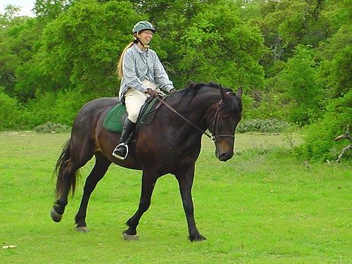
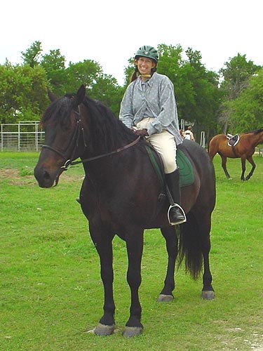

Look familiar? He felt as good as
I remembered, and a lot lighter in the front end.

He'd just lift easily into the canter
and use his strength to stay off the forehand.

Dave got on Bob and we had a trotting
race. Othello won. Bob broke into the canter. They both used to be driving
horses, but they've transitioned to saddle horses quite nicely.